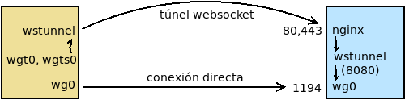

7.4.3.2.3. Redes restringidas¶
Cuando nuestro guerrero de la carretera se encuentra dentro de una red restringida que no controlamos nos toparemos muy probablemente con el problema de que seremos incapaces de acceder al puerto UDP en que hayamos dejado escuchando el servidor (el 1194 en nuestra propuesta).
En estas redes restringidas, lo habitual es que sólo podemos:
- Hacer consultas DNS (53/UDP).
- Navegar (puertos 80/TCP y 443/TCP).
Podríamos dejar escuchando el servicio en el puerto 53/UDP, pero es común que en estas redes restringidas las consultas DNS se limiten a algún servidor interno, con lo cual es una solución que no será efectiva en todas las redes.
La solución general es usar los puertos para tráfico web, pero nos topamos con el problema de que por motivos de rendimiento wireguard sólo se ha implementado para UDP. Una solución para solucionar este inconveniente es tunelizador el trafico mediante Websockets <https://v0ctor.me/websocket>. Como forma parte del estándar HTML5, no deberiamos tener problemas con el proxy web, aun usando HTTP y no HTTPs. Además, no recifrar con SSL aminorará la pérdida de rendimiento de tener que tunelizar wireguard.
7.4.3.2.3.1. wstunnel¶
Para lograr nuestro objetivo podemos usar wstunnel, el cual es capaz de tunelizar mediante Websockets tráfico UDP. No existe paquete para Debian[1], pero podemos descargar el ejecutable del propio repositio de Github. Su uso es bastante sencillo. Descargamos en dos máquinas el ejecutable y:
En la máquina servidor lo ejecutamos de esta forma:
# /usr/local/bin/wstunnel -v --server ws://0.0.0.0 --restrictTo 127.0.0.1:1194
lo cual supone que la aplicación escuche en el puerto 80 los datos que se pretenden tunelizar. Además, sólo se aceptará tráfico que el cliente indique que va dirigido al puerto 1194 de la interfaz de loopback.
En la máquina cliente, rematamos el otro extremo del túnel con:
# /usr/local/bin/wstunnel -v --udp --udpTimeoutSec -1 -L 127.0.0.1:12345:127.0.0.1:1194 ws://203.0.113.1
que conecta con el puerto 80 del servidor (hemos supuesto que 203.0.113.1 es su dirección IP) y envía los datos que recibe por el puerto 12345/UDP de la interfaz de loopback al puerto 1194/UDP de la interfaz de loopback del servidor (esto último coincide con lo que se indicó con --restrictTo en el servidor).
Con ello ya tendremos establecido el tunel dentro del cual circula el tráfico UDP. Si queremos probarlo, podemos hacer:
servidor$ netcat -u -l -p 1194
y en el cliente:
cliente$ netcat -u localhost 12345
Ambos netcat deberían comunicarse a través del websocket.
Nota
Para que el tráfico hubiera sido cifrado (y por el puerto 443) habría bastado con usar wss en vez de ws.
7.4.3.2.3.2. Encapsulando wireguard¶
Podemos aplicar lo expuesto bajo el epígrafe anterior al caso sede-equipo móvil en el que el equipo móvil se halla dentro de una red restringida.
Servidor
La configuración de wireguard es exactamente la misma pero con el añadido de que junto a la interfaz debemos arrancar o parar la parte de servidor de wstunnel que redirige el tráfico recibido hacia el propio wireguard:
[Interface]
Address = 10.8.0.1/24
ListenPort = 1194
PrivateKey = kEANNMfztMtzgwFyyaWOou7+c8ZPD/lyGhmcM7oFtXA=
PreUp = /etc/wireguard/wstunnel.sh up %i
PostDown = /etc/wireguard/wstunnel.sh down %i
[Peer]
PublicKey = f2CH3QXHiXwFhdATcDi42DU+PUOC9Ky8BgkHBigY5H4=
AllowedIPs = 10.8.0.2/32
La automatización de wstunnel se logra gracias al script
wstunnel.sh, que debe guardarse con permisos de ejecución
en /etc/wireguard. El script, además, lee un fichero de configuración
/etc/wireguard/wg0.wstunnel en el que pueden definirse (con la sintaxis
de sh) algunas variables:
SECURE=1 # Para usar wss, en vez de ws.
LISTEN_ADDRESS=127.0.0.1 # IP de escucha de wstunnel. Por defecto, 0.0.0.0.
LISTEN_PORT=8080 # Por si se desea cambiar el predefinido: ws=80; wss=443
Como para este caso, no cifraremos y queremos que el tunel creado por wstunnel escuche en la interfaz física, no definiremos ninguna variable.
Nota
Como el wireguard sigue escuchando en el puerto 1194 de todas las interfaces, incluida la física, los clientes podrán seguir conectándose, si tienen la posibilidad, sin necesidad de wstunnel.
Cliente
Mientras en el cliente, debemos crear un archivo /etc/wireguard/wgt0.conf
con el siguiente contenido:
[Interface]
Address = 10.8.0.2/24
PrivateKey = WB4TAWIIlaOyULudlcdhqctTl/pdzO7m+6x4DhAP+0k=
PreUp = /etc/wireguard/wstunnel.sh up %i
PostUp = /etc/wireguard/wstunnel.sh route %i
PostDown = /etc/wireguard/wstunnel.sh down %i
[Peer]
PublicKey = /Pr37VgN7GVvizJw9FpCL62DSwocdNEf7lwfdDRZXj8=
Endpoint = 127.0.0.1:1194
AllowedIPs = 0.0.0.0/0
que utiliza el mismo script para crear la parte
cliente de wstunnel. Lo habitual, en el caso de redes restringidas,
es que queramos usar el túnel para salir son cortapisas a internet, de ahí el
valor de AllowedIPs.
Para esta parte cliente sí es necesario el fichero de configuración del tunel en el que puede definirse:
SECURE=1 # Si queremos usar wss, en vez ws.
RHOST=203.0.113.1 # Obligatorio. Dirección del servidor.
WG_PORT=1194 # Puesto en el que escucha la parte servidor de wireguard.
Entiéndase que RHOST es la dirección donde escucha el otro extremo de wstunnel. En consecuencia, si se usó en la configuración del servidor LISTEN_PORT para alterar el puerto predeterminado y se dejó este escuchando en la interfaz física, es más que probable que tenga que incluir el puerto al definir RHOST:
RHOST=203.0.113.1:8080
Advertencia
Si deseamos acceder al servidor mediante nombre y no mediante IP, nos toparemos con el problema de que para establecer el túnel, necesitamos resolver el nombre, pero para resolver el nombre con un DNS externo, tenemos que haber completado el establecimiento del túnel. Como usar el nombre y no la IP sólo cobra importancia, cuando utilizamos un proxy inverso en el servidor, trataremos este problema al añadir nginx a la ecuación.
En cuanto a WG_PORT coincidirá con el valor de ListenPort definido en el servidor.
Para resolver nuestro caso, dejaremos esta configuración:
# /etc/wireguard/wgt0.wstunnel
RHOST=203.0.113.1
WG_PORT=1194
7.4.3.2.3.3. Añadiendo nginx a la ecuación¶
Poner a escuchar en la interfaz física a wstunnel imposibilita a la máquina hacer también de servidor web. Si este es el caso, la solución consiste en disponer un proxy inverso que redirija el tráfico hacia el servidor web o hacia wstunnel según convenga.
7.4.3.2.3.3.1. Servidor¶
La actuación en el servidor consiste en configurar:
- wireguard con wstunnel.
- nginx como proxy inverso.
- wireguard con wstunnel
Debemos poner a escuchar a wstunnel en la interfaz de loopback, usando ws y en un puerto (8080) que no moleste al servidor web. La configuración de la interfaz (
/etc/wireguard/wg0.conf, será la siguiente):[Interface] Address = 10.8.0.1/24 ListenPort = 1194 PrivateKey = kEANNMfztMtzgwFyyaWOou7+c8ZPD/lyGhmcM7oFtXA= PreUp = /etc/wireguard/wstunnel.sh up %i PostDown = /etc/wireguard/wstunnel.sh down %i [Peer] PublicKey = f2CH3QXHiXwFhdATcDi42DU+PUOC9Ky8BgkHBigY5H4= AllowedIPs = 10.8.0.2/32
y la del túnel (/etc/wireguard/wg0.wstunnel):
LISTEN_ADDRESS=127.0.0.1 LISTEN_PORT=8080
Con esta configuración, podemos acceder sin encapsulación al extremo servidor de la VPN conectándonos al puerto 1194. En cambio, la encapsulación con wstunnel escucha en localhost:8080 y no es directamente accesible, ya que usaremos como intermediario a nginx.
- nginx
Debemos crear un fichero con la configuración pertinente llamado
snippets/websocket.conf:proxy_http_version 1.1; proxy_set_header Upgrade $http_upgrade; proxy_set_header Connection $connection_upgrade; proxy_set_header X-Forwarded-Host $host; proxy_set_header X-Forwarded-Proto $x_forwarded_proto; proxy_set_header X-Forwarded-For $proxy_add_x_forwarded_for; proxy_set_header Host $http_host;
Si hemos usado el nombre vpn.example.net para identificar la conexión, entonces podremos definir el sitio como:
map $http_upgrade $connection_upgrade { default upgrade; '' close; } map $https $x_forwarded_proto { default http; on https; } server { listen 80; listen 443 ssl; server_name vpn.example.net; include snippets/snakeoil.conf; if ($https = "on") { proxy_set_header X-Forwarded-Proto https; } location / { proxy_pass http://127.0.0.1:8080; include snippets/websocket.conf; } }
Nota
En caso de no haber usado el nombre de máquina para identificar la conexión VPN y haber echado mano de la ruta
/wireguard/, basta con usar tal localización en la configuración de nginx:location ^~ /wireguard/ { proxy_pass http://127.0.0.1:8080; include snippets/websocket.conf; }
En la parte relativa al cliente está explicado como incorporar la ruta a la petición.
7.4.3.2.3.3.2. Cliente¶
En el clientes las actuaciones consisten en configurar:
- wireguard con wstunnel
- dnsmasq para poder usar un nombre para el servidor en vez de su IP.
- wireguard con wstunnel
En cada cliente podemos tener dos configuraciones: una para cuando el cliente no se encuentre en una red restringida y que conecta directamente con el puerto 1194 y otra para cuando se encuentra restricciones y debe usar el websocket para burlarlas.
La primera configuración la asociaremos con la interfaz wg0 y tendrá este fichero de configuración (
/etc/wireguard/wg0.conf):[Interface] Address = 10.8.0.2/24 PrivateKey = WB4TAWIIlaOyULudlcdhqctTl/pdzO7m+6x4DhAP+0k= [Peer] PublicKey = /Pr37VgN7GVvizJw9FpCL62DSwocdNEf7lwfdDRZXj8= Endpoint = 203.0.113.1:1194 AllowedIPs = 0.0.0.0/0
La segunda encapsula hacienda uso de wstunnel y la asociaremos a dos interfaces distintas: wgt0 para usar websocket utilizando HTTP y wgts0 para usar websocket utilizando HTTPs. La primera es preferible, ya que evita añadir una capa más de cifrado que afectará al rendimiento de la conexión, pero la segundo podría ser necesaria en caso de que el proxy de la red nos impida el uso de la primera.
El fichero
/etc/wireguard/wgt0.confdebe ser el siguiente:[Interface] Address = 10.8.0.2/24 PrivateKey = WB4TAWIIlaOyULudlcdhqctTl/pdzO7m+6x4DhAP+0k= PreUp = /etc/wireguard/wstunnel.sh up %i PostUp = /etc/wireguard/wstunnel.sh route %i PostDown = /etc/wireguard/wstunnel.sh down %i [Peer] PublicKey = /Pr37VgN7GVvizJw9FpCL62DSwocdNEf7lwfdDRZXj8= Endpoint = 127.0.0.1:1194 AllowedIPs = 0.0.0.0/0
y el del túnel (
/etc/wireguard/wgt0.wstunnel):RHOST=vpn.example.net WG_PORT=1194
Nota
Desde el clientamos con nginx, no con wl wstunnel del otro extremo, de ahí que no haya habido que hacer mención al puerto 8080.
La configuración para la interfaz alternativa wgts0 es prácticamente la misma, salvo porque wstunnel debería utlizar wss y no ws. Por ello, el fichero de configuración de la interfaz es exactamente el mismo:
# cd /etc/wireguard # ln -s wgt0.conf wgts0.conf
y el de configuración del túnel (
/etc/wireguard/wgts0.wstunnel) no tiene más que declarar que se usará canal seguro:SECURE=1 . /etc/wireguard/wgt0.wstunnel
Nota
Suponemos que la conexión al websocket se hace usando el nombre vpn.example.net, lo que nos permitirá identificarla en nginx. En caso de no ser posible y sólo tener la posibilidad de conectar a través de la IP, aún podemos distinguir la conexión VPN del tráfico HTTP a través de la ruta. Para ellos debemos añadir a la configuración del túnel la variable WPATH:
RHOST=203.0.113.1 WG_PORT=1194 WPATH=/wireguard/
- dnsmasq
Necesitamos usar dnsmasq para asegurarnos de que el nombre del servidor es resoluble cuando el túnel no ha acabado de establecirse. La argucia consiste en incluir manualmente la resolución en un fichero de hosts y utilizar dnsmasq para que la consulta no salga de la propia máquina. La receta mínima (hay una amplia sección dedicada a la configuración de dnsmasq) es la siguiente:
Instalar dnsmasq:
# apt install dnsmasqAñadir el fichero
/etc/dnsmasq.d/dns.confcon el siguiente contenido:no-resolv server=1.1.1.1 # O Los servidores DNS que prefiramos. server=1.0.0.1 auth-zone=vpn.example.net auth-server=vpn.example.net host-record=vpn.example.net,203.0.113.1
Reiniciar dnsmasq:
# invore-rc.d dnsmasq restartModificar
/etc/resolv.confpara que sea nuestra propia máquina (o sea, dnsmasq) el servidor de consulta:nameserver 127.0.0.1
Notas al pie
| [1] | Sí existe paquete para websockify, pero éste sólo permite encapsular tráfico TCP. |